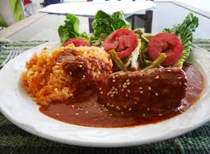

Platillos Típicos
En México contamos con una gran variedad de platillos desde la almeja chocolatada en Baja California Sur, hasta la sopa de Lima de Yucatán. Todos los ingredientes son deliciosos; pero de los más básicos y que distinguen a nuestro país, son el chile, el nopal, los frijoles y por supuesto no puede faltar el maíz, tanta es su diversidad y riqueza cultural que a partir del 16 de noviembre de 2010 la gastronomía mexicana fue declarada por la UNESCO patrimonio cultural inmaterial de la humanidad. Es un factor fundamental de identidad cultural, cohesión social, y un factor de desarrollo comunitario
Patrimonio
La cocina mexicana es una manifestación cultural viva, representativa de la humanidad por su antigüedad, continuidad histórica, la originalidad de sus productos, técnicas y procedimientos. El arte culinario mexicano es muy elaborado y está cargado de símbolos.
Tostada
El nombre suele referirse a una tortilla plana que se fríe o tuesta. Se puede consumirse sola o utilizarse como base de otros alimentos. Normalmente se utilizan tortillas de maíz para las tostadas.

Pozole
El pozole es un caldo tradicional mexicano hecho a base de granos de maíz, comúnmente de la variedad cacahuazintle, al que se agregan carnes, verduras y especias muy variadas.

Mole
El mole es de origen prehispánico, y era ofrecido en ceremonias como ofrenda a los dioses. La más popular es el mole poblano, un mole oscuro proveniente de Puebla, pero conocido en todo el país.
Pambazo
El pambazo es un emparedado mexicano, cuyo relleno varía según la región en la que se consuma, siendo los rellenos tradicionales de papa, y de papa con chorizo.